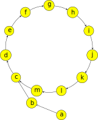

欧拉定理 & 费马小定理
费马小定理
定义
若 \(p\) 为素数，\(\gcd(a, p) = 1\)，则 \(a^{p - 1} \equiv 1 \pmod{p}\)。
另一个形式：对于任意整数 \(a\)，有 \(a^p \equiv a \pmod{p}\)。
证明
设一个质数为 \(p\)，我们取一个不为 \(p\) 倍数的数 \(a\)。
构造一个序列：\(A=\{1,2,3\dots,p-1\}\)，这个序列有着这样一个性质：
证明：
又因为每一个 \(A_i\times a \pmod p\) 都是独一无二的，且 \(A_i\times a \pmod p < p\)
得证（每一个 \(A_i\times a\) 都对应了一个 \(A_i\)）
设 \(f=(p-1)!\), 则 \(f\equiv a\times A_1\times a\times A_2\times a \times A_3 \dots \times A_{p-1} \pmod p\)
证毕。
也可用归纳法证明：
显然 \(1^p\equiv 1\pmod p\)，假设 \(a^p\equiv a\pmod p\) 成立，那么通过二项式定理有
因为 \(\binom{p}{k}=\frac{p(p-1)\cdots (p-k+1)}{k!}\) 对于 \(1\leq k\leq p-1\) 成立，在模 \(p\) 意义下 \(\binom{p}{1}\equiv \binom{p}{2}\equiv \cdots \equiv \binom{p}{p-1}\equiv 0\pmod p\)，那么 \((a+1)^p \equiv a^p +1\pmod p\)，将 \(a^p\equiv a\pmod p\) 带入得 \((a+1)^p\equiv a+1\pmod p\) 得证。
欧拉定理
在了解欧拉定理（Euler's theorem）之前，请先了解 欧拉函数。定理内容如下：
定义
若 \(\gcd(a, m) = 1\)，则 \(a^{\varphi(m)} \equiv 1 \pmod{m}\)。
证明
实际上这个证明过程跟上文费马小定理的证明过程是非常相似的：构造一个与 \(m\) 互质的数列，再进行操作。
设 \(r_1, r_2, \cdots, r_{\varphi(m)}\) 为模 \(m\) 意义下的一个简化剩余系，则 \(ar_1, ar_2, \cdots, ar_{\varphi(m)}\) 也为模 \(m\) 意义下的一个简化剩余系。所以 \(r_1r_2 \cdots r_{\varphi(m)} \equiv ar_1 \cdot ar_2 \cdots ar_{\varphi(m)} \equiv a^{\varphi(m)}r_1r_2 \cdots r_{\varphi(m)} \pmod{m}\)，可约去 \(r_1r_2 \cdots r_{\varphi(m)}\)，即得 \(a^{\varphi(m)} \equiv 1 \pmod{m}\)。
当 \(m\) 为素数时，由于 \(\varphi(m) = m - 1\)，代入欧拉定理可立即得到费马小定理。
扩展欧拉定理
定义
解释
读者可能对第二行产生疑问，这一行表达的意思是：如果 \(b < \varphi(m)\) 的话，就不能降幂了。
主要是因为题目中 \(m\) 不会太大，而如果 \(b < \varphi(m)\)，自然复杂度是可以接受的。而如果 \(b \ge \varphi(m)\) 的话，复杂度可能就超出预期了，这个时候我们才需要降幂来降低复杂度。
证明
直观理解

需要知道的是，在 \(\pmod m\) 的条件下，\(a^b \bmod m\) 的取值范围一定在 \([0, m)\)，而 \(a^i \bmod m = (a^{i-1} \bmod m) \times a \bmod m\)，那么对于任意一个数 \(a\)，那么很容易就能知道它的 后继，在有限的空间内这一定会形成一个循环。
在扩展欧拉定理中，循环分为纯循环和混循环。其中纯循环中不存在节点有两个前驱，而混循环则反之。而 \(a^i \mod n\) 形成的序列可以是一个混循环，那么只需要知道循环节的长度，和前面那一小段未进入循环节的长度，就可以根据这个性质来进行降幂了。
值得注意的是，无论是费马小定理，还是（扩展）欧拉定理，一个很重要的应用就是降幂，从而将不可能的表达式化为可能。
形式证明
证明转载自 synapse7，并进行了一些整理。
-
命题：\(a\) 的从 \(0\) 次，\(1\) 次到 \(b\) 次幂模 \(m\) 构成的序列中，存在 \(r\) 和 \(s\)，使得前 \(r\) 个数（即从 \(a^0 \bmod m\) 到 \(a^{r-1} \bmod m\)）互不相同，从第 \(r\) 个数开始，每 \(s\) 个数就循环一次。
证明：
-
由鸽巢定理易证。
我们把 \(r\) 称为 \(a\) 幂次模 \(m\) 的循环起始点，\(s\) 称为循环长度。（注意：\(r\) 可以为 \(0\)）
用公式表述为：\(\forall i \ge r, a^i \equiv a^{i+s} \pmod{m}\)
-
-
命题：\(a\) 为素数的情况，该式成立。
证明：
-
若模 \(m\) 不能被 \(a\) 整除，而因为 \(a\) 是一个素数，那么 \(\gcd(a, m) = 1\) 成立，根据欧拉定理，容易证明该式成立。
-
若模 \(m\) 能被 \(a\) 整除，那么存在 \(r\) 和 \(m'\) 使得 \(m = a^r m'\)，且 \(\gcd(a, m')=1\) 成立。所以根据欧拉定理有 \(a^{\varphi(m')} \equiv 1 \pmod{m'}\)。
又由于 \(\gcd(a^r, m')=1\)，所以根据欧拉函数的求值规则，容易得到：\(\varphi(m) = \varphi(m') \times (a-1)a^{r-1}\)，即我们有：\(\varphi(m') \mid \varphi(m)\)。
所以 \(a^{\varphi(m')} \equiv 1 \pmod {m'}, \varphi(m') \mid \varphi(m) \implies a^{\varphi(m)} \equiv 1 \pmod {m'}\)，即 \(a^{\varphi(m)}=km'+1\)，两边同时乘以 \(a^r\)，得 \(a^{r+\varphi(m)} = km + a^r\)（因为 \(m = a^r m'\)）
所以对于 \(m\) 中素因子 \(a\) 的次数 \(r\) 满足：\(a^r \equiv a^{r+\varphi(m)} \pmod m\)。我们可以简单变换形式，得到 推论：
\[ b > r \implies a^b \equiv a^{r + ((b-r) \bmod \varphi(m))} \pmod {m} \]又由于 \(m = a^r m'\)，所以 \(\varphi(m) = \varphi(a^r) \varphi(m') \ge \varphi(a^r)=a^{r-1}(a-1) \ge r\)（tips：\(a\) 是素数，最小是 \(2\)，而 \(r \ge 1\)）。
所以因为 \(\varphi(m) \ge r\)，故有：
\[ a^r \equiv a^{r+\varphi(m)} \equiv a^{r \bmod \varphi(m)+\varphi(m)} \pmod m \]所以
\[ \begin{aligned} a^b &\equiv a^{r+(b-r) \bmod \varphi(m)} \\ &\equiv a^{r \bmod \varphi(m) + \varphi(m) + (b-r) \bmod \varphi(m)} \\ &\equiv a^{\varphi(m) + b \bmod \varphi(m)} \end{aligned} \pmod m \]即 \(a^b\equiv a^{b \bmod \varphi(m)+\varphi(m)}\pmod m\)。
-
-
命题：\(a\) 为素数的幂的情况，该式成立。
证明：
-
不妨令 \(a = p^k\)，是否依然有 \(\forall r, a^{r} \equiv a^{r+\varphi(m)} \pmod m\)？
答案是肯定的，由命题 1 可知存在 \(s\) 使得 \(a^s\equiv 1 \pmod m\)，所以 \(p^{\mathrm{lcm}(s,k)} \equiv 1 \pmod {m}\)，所以令 \(s'=\frac{s}{\gcd(s,k)}\) 时，我们能有 \(p^{s'k} \equiv 1 \pmod {m}\)。
此时有关系：\(s' \mid s\) 且 \(s \mid \varphi(m)\)，且 \(r'= \lceil \frac{r}{k}\rceil \le r \le \varphi(m)\)，由 \(r',s'\) 与 \(\varphi(m)\) 的关系，依然可以得到 \(a^b\equiv a^{b \bmod \varphi(m)+\varphi(m)}\pmod m\)。
-
-
命题：\(a\) 为合数的情况，该式成立。
证明：
-
只证 \(a\) 拆成两个素数的幂的情况，大于两个的用数学归纳法可证。
设 \(a=a_1a_2\)，其中 \(a_i=p_i^{k_i}\)，而 \(a_i\) 的循环长度为 \(s_i\)；
则 \(s \mid \operatorname{lcm}(s_1,s_2)\)，由于 \(s_1 \mid \varphi(m),s_2 \mid \varphi(m)\)，那么 \(\operatorname{lcm}(s_1,s_2) \mid \varphi(m)\)，所以 \(s \mid \varphi(m)\)，\(r=\max(\lceil \frac{r_i}{k_i} \rceil) \le \max(r_i) \le \varphi(m)\)；
由 \(r,s\) 与 \(\varphi(m)\) 的关系，依然可以得到 \(a^b \equiv a^{b \bmod \varphi(m)+\varphi(m)}\pmod m\)。
证毕。
-